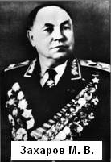

| Выдающийся штабист.
Маршал Советского Союза Захаров Матвей Васильевич (1898-1972), военный деятель, дважды Герой Советского Союза (1945, 1971), Герой Чехословакии (1970), профессор (1948).
Родился в деревне Войлово Старицкого уезда Тверской губернии в крестьянской семье плотника. Через два года после рождения Матвея семья переехала в Петербург и из крестьянской стала рабочей. Будущий маршал жизненный путь тоже начал с рабочей профессии: в 15 лет поступил учеником слесаря. Днём учился в школе, а вечером работал. Потом нанялся рабочим на судоремонтный завод «Крейтон», после него слесарил на пушечном заводе «Динамо», с которого его уволили за строптивость. Друзья помогли устроиться на телефонно-телеграфный завод «Сименс и Гальске», тут сблизился с большевиками, вступил в РКП(б).
Биографы пишут, что красногвардеец Матвей Захаров принимал участие в штурме Зимнего, охранял Смольный, видел Ленина, участвовал в подавлении выступлений юнкеров, воевал с конными казаками П.Н. Краснова у Пулковских высот. Что здесь правда, а что красивый вымысел, теперь не отделить. Скажем лишь, что, по современным данным, штурма Зимнего как такового не было. В марте 1918 года Захарова зачислили на вторые петроградские артиллерийские курсы, по окончании которых он командовал батареей в «Стальной дивизии» Дмитрия Жлобы, сразавшейся с белой гвардией на Южном фронте. Зарекомендовал себя красный командир прекрасно, потому снова его направили на учёбу в Московскую штабную школу, которую он окончил в 1919 году. Захаров вернулся на Южный фронт, командовал дивизионом, был помощником начальника штаба одной из бригад 10-й армии, дрался с белыми под Царицыным (ныне Волгоград), на Дону, на Ставрополье, на Северном Кавказе. Короче говоря, стал кадровым советским офицером, хотя это слово в те годы было под запретом, применялось «командир». Его оставляют в армии.
В 1925 году Матвей Захаров поступил в Военную академию им. М.В. Фрунзе. Окончив её полковником, служил в штабе Белорусского военного округа, затем командовал полком. В 1932 году неуемный Захаров заканчивает в той же академии другой факультет и возвращается в Белоруссию начальником оперативного отдела штаба округа. Но учёба не закончилась: в 1936 году Захаров стал слушателем Академии Генерального штаба. С 1937 года он назначен начальником штаба Ленинградского военного округа, затем по рекомендации Б.М. Шапошникова переведён в Генеральный штаб на должность помощника начальника Генерального штаба.
В 1940 году Захаров получил самостоятельный пост - начальник штаба 12-й армии, потом Одесского военного округа, в этой должности участвовал в разработке операции по «присоединению» Западной Белоруссии.
С июня по август 1941 года Матвей Захаров командует штабом 9-й армии, сформированной в Одесском округе, потом его назначают начальником штаба Главного командования Северо-Западного направления. Здесь он попал в автоаварию, лечился в госпитале. В январе 1942 года получил новое назначение - начальником штаба Калининского фронта (командующий И.С. Конев). Вот так через 43 года Матвей Васильевич снова оказался на родной земле, целый год, до апреля 1943 года, возглавлял штаб Калининского фронта, разрабатывая почти все операции Ржевской битвы.
Анализ разведданных, строительство дорог, взаимодействие армий и соседних фронтов, родов войск, планирование и проведение боевых действий, войсковых операций, продовольственное снабжение, все виды боевого обеспечения, работа госпиталей и тыловых частей, обеспечение резервами, и многое другое, ежедневные, порой ежечасные доклады командующему фронтом о положении дел, а иногда и в Ставку, умение предугадывать события и многое, очень многое входило в обязанности генерала Захарова как начальника штаба. На месте не посидишь, надо самому побывать в войсках часто под обстрелами и бомбежкой, оценить обстановку, принять доклады подчинённых командиров и штабов, принять решения и выработать предложения командующему …
Матвей Захаров стал опытным, деятельным воинским начальником высокого уровня, а потому командование поручало ему руководить штабами Степного, Резервного, 2-го Украинского фронтов. С июля по октябрь 1945 года командовал штабом Забайкальского фронта в войне против Японии. За время войны Захаров участвовал в разработке и реализации 19 фронтовых операций, в том числе таких знаменитых, как Белгородско-Харьковская, Корсунь-Шевченковская, Ясско-Кишиневская и другие.
Опыт разработчика операций позволил ему успешно руководить Военной академией Генерального штаба (1945-1949 и 1963-1964), он служил на посту заместителя начальника Генштаба и начальника ГРУ - Главного разведывательного управления (1949-1952), затем был Главным инспектором Советской Армии.
После смерти И. Сталина в карьере нашего земляка снова изменения - Захаров командует войсками Ленинградского военного округа (1953-1957), затем его назначают главнокомандующим Группой советских войск в Германии (1957-1960). Командовал он и Генеральным штабом ВС СССР в 1960-1963 годах и с 1964 по 1971 годы. Звание Маршала Советского Союза присвоено в 1959 году, а в сентябре 1971 года – стал дважды Героем Советского Союза.
Умер маршал 31 января 1972 года. Его причисляли к тем ветеранам Вооруженных Сил, которые были не согласны с установками Никиты Хрущева по разоблачению культа личности И.В. Сталина, их называют «сталинистами» до сих пор за то, что «лакируют Сталина как гениального вождя». Они, как участники тех событий, имеют на это личное право, если учесть их воинские труды и заслуги. Маршалу Матвею Захарову как дважды Герою Советского Союза в Старице в 1981 году установлен бюст, в Твери и Старице названы улицы его именем, в селе Емельянове Старицкого района школе присвоено имя героя - земляка.
<< Предыдущая страница |